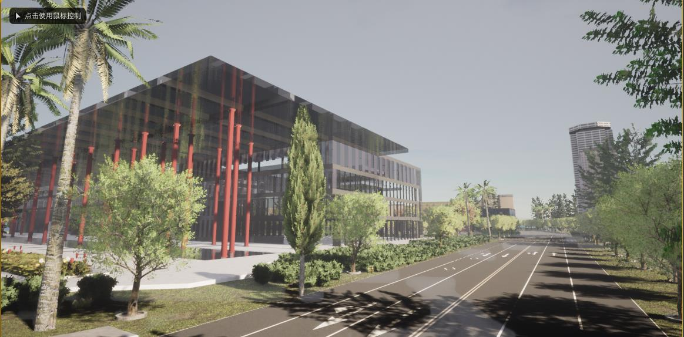
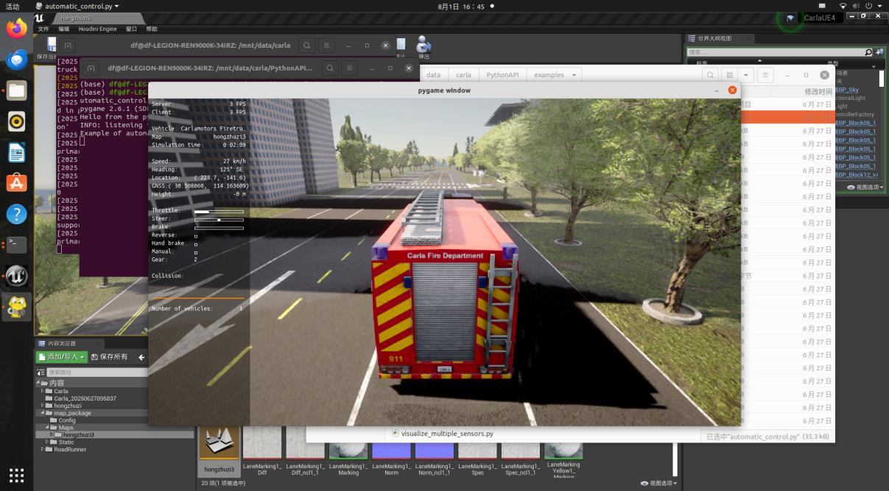
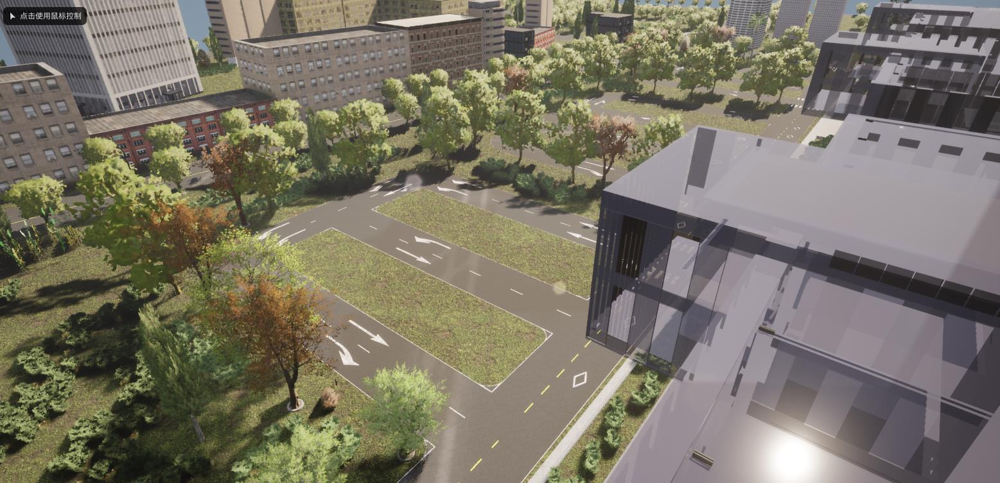
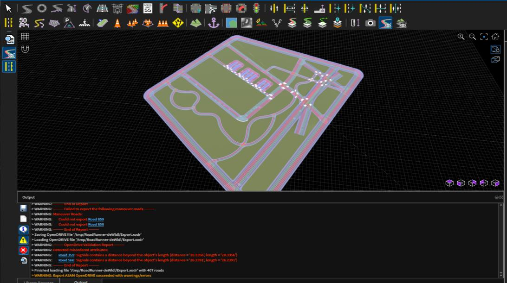
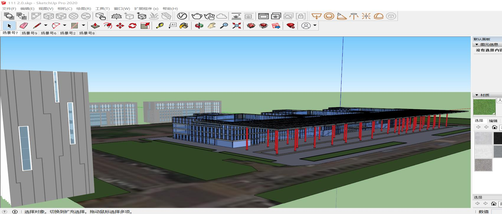
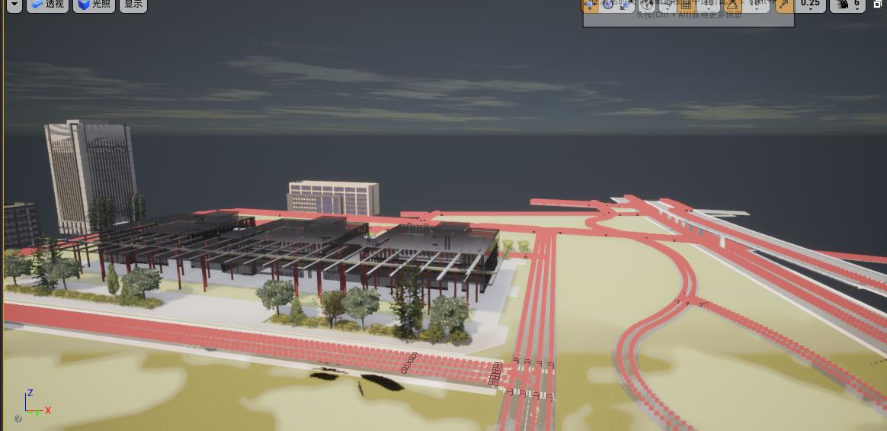

Autonomous driving simulation · 2025
Simulation Environments for Autonomous Driving World Models
Building road networks and interactive 3D environments for autonomous driving simulation.

Research question
How can real road layouts and built environments be translated into controllable simulation scenes for developing and inspecting autonomous driving systems?
Approach
Use OSM and RoadRunner to construct road networks, model buildings and surrounding environments with SketchUp and Blender, and integrate the assets into UE4/CARLA. Connect scene construction with vehicle simulation, scenario testing and exploration of a perception–decision–control loop.
Current work
Built road and architectural environments and carried out vehicle simulation and integration work. The six images document rendered road scenes, vehicle debugging, RoadRunner editing, SketchUp modeling and Unreal Engine integration.
Internship project documenting road network construction, architectural environments and vehicle simulation integration.










